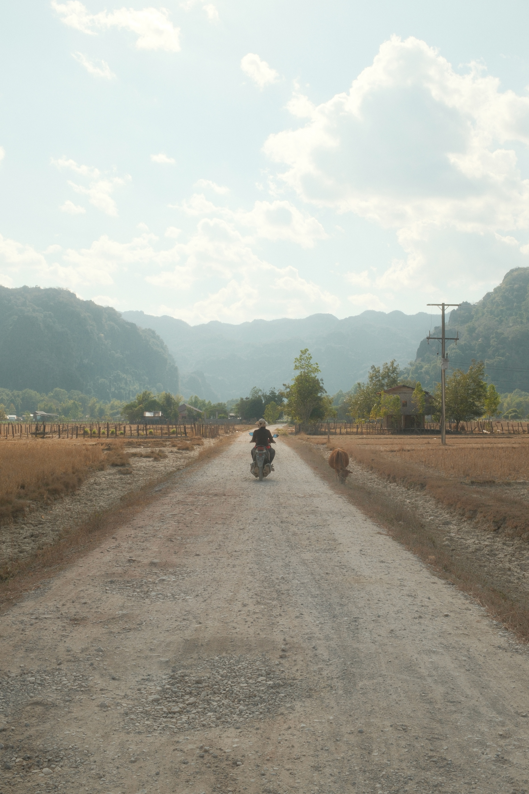

Bachelor of Science, Computer Science @ University of Toronto (2023)
linkedin · google scholar
/\_/\ ( o.o ) > ^ <
_._ _,-'""`-._ (,-.`._,'( |\`-/| `-.-' \ )-`( , o o) `- \`_`"'-
/\_/\ ( -.- ) > ~ < zzZ
,_ _ |\\_,-~/ / _ _ | ,--. ( @ @ ) / ,-' \ _T_/-._( ( / `. \ | _ \ | \ \ , / | || |-_\__ / ((_/`(____,-'

|\---/| | o_o | \_^_/
|\__/,| |_ _ |.---. ( T ) ) (((^_(((/(((_/
|\---/| | ,_, | \_`_/-..----. ___/ ` ' ,""+ \ (__...' __\ |`.___.'; (_,...'(_,.`__)/'.....+
/\ /\ { `---' } { O O } ~~> V <~~ \ \|/ / `-----'__ / \ `^\_ { }\ |\_\_ W | \_/ |/ / \_\_( ) \__/ /(_E \__/ ( / MM